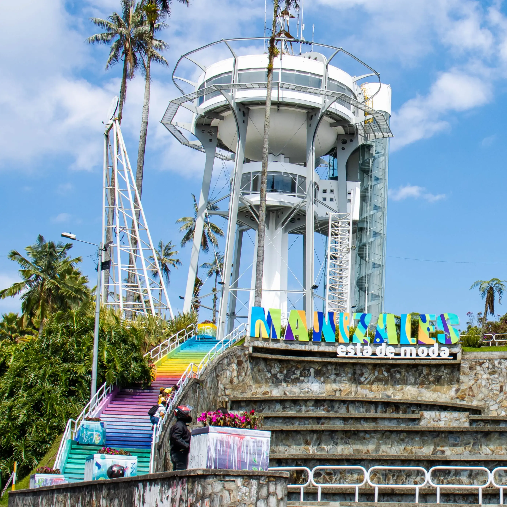

Descubre Caldas
Caldas, ubicado en el corazón del Eje Cafetero, es un departamento lleno de montañas, cafetales y paisajes espectaculares. Su capital, Manizales, es reconocida como la "Ciudad de las Puertas Abiertas".
Además de su cultura cafetera, Caldas ofrece termales, parques naturales y una vibrante vida cultural y estudiantil.
Mirador de Chipre - Manizales
El icónico Mirador de Chipre en Manizales ofrece una de las mejores vistas panorámicas de la ciudad y la cordillera. Sus coloridas escaleras, el ambiente cultural y la modernidad de su estructura lo convierten en un sitio imperdible para visitantes y locales.
Parque de Chinchiná
El parque principal de Chinchiná es un punto de encuentro rodeado de tradición cafetera y arquitectura colonial. Destaca la imponente iglesia y la icónica taza de café gigante, símbolos de la identidad cultural y productiva del municipio.
¡Contáctanos ahora!